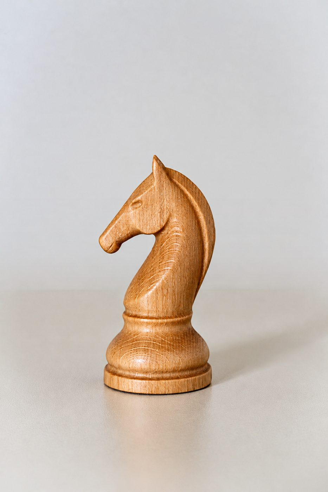

Treprodukter fra et lite CNC-verksted i BergenWood made to order in a small CNC workshop in Bergen
Skilt, sjakkbrikker, skjærefjøler og spesialdeler i eik, bøk og furu – tegnet, frest og ferdigbehandlet for hånd.Signs, chess pieces, cutting boards and one-off parts in oak, beech and pine – designed, machined and finished by hand.
Be om prisAsk for a price
Springer fra sjakksettet.Knight from the chess set.